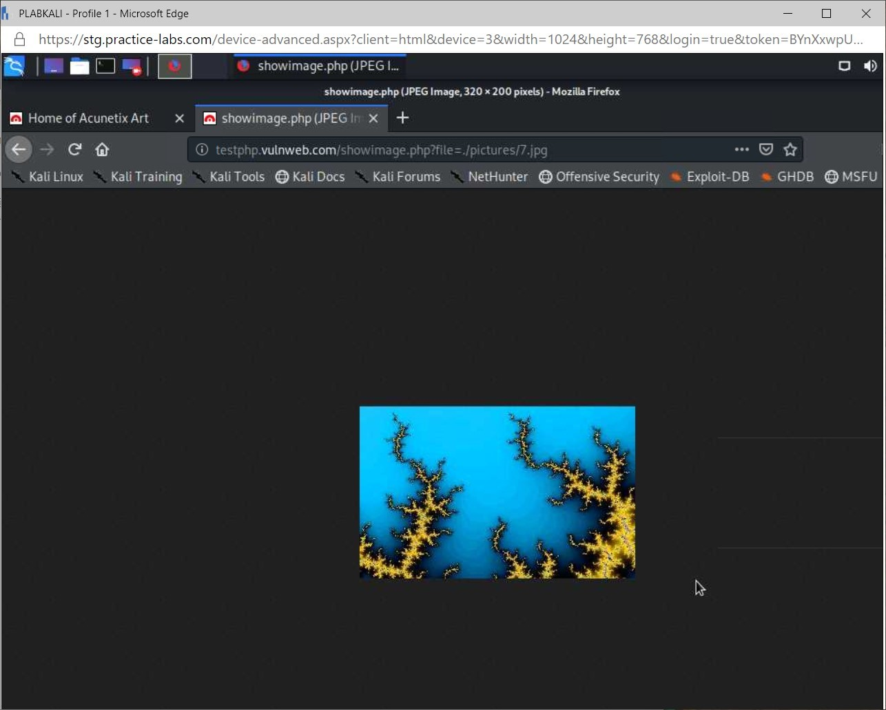

Introduction
bb1840e4-5425-49a3-9d75-477b8f016ff8
Welcome to the Identifying Different Application Exploits Practice Lab. In this module, you will be provided with the instructions and devices needed to develop your hands-on skills.
dc640c20-9434-45ea-b7c2-6d4d6a196bfc
Learning Outcomes
In this module, you will complete the following exercises:
- Exercise 1 - Cross Site Scripting
- Exercise 2 - SQL Injection
- Exercise 3 - Information Leakage and Improper Error Handling
- Exercise 4 - Race Conditions, Memory Leak, Resource Exhaustion and Overflow Attacks
- Exercise 5 - Directory Traversal and Path Manipulation
- Exercise 6 - Privilege Escalation
- Exercise 7 - Driver Manipulation and Replay Attacks
- Exercise 8 - Pass the Hash, API Attacks, Request Forgeries, Pointer Dereference and SSL Stripping
After completing this module, you should be able to:
- Exploit Reflected XSS Attacks
- Exploit Error-Based SQL Injection
- Gather Information from Exception Messages
- Identify Buffer Overflow
- Exploit Directory Listing Vulnerability
- Perform Vertical Privilege Escalation
- Perform Cross Site Request Forgery
After completing this module, you should have further knowledge of:
- Types of XSS Attacks
- Error Based SQL Injection
- Device Manipulation and Replay Attacks
- API Attacks, Pointer Dereference, Pass the Hash and SSL Stripping
Exam Objectives
The following exam objectives are covered in this lab:
1.3 Given a scenario, analyze potential indicators associated with application attacks.
- Privilege Escalation
- Cross-site Scripting
- Injections
- Pointer/Object Dereference
- Directory Traversal
- Buffer Overflows
- Race Conditions
- Error Handling
- Improper Input Handling
- Replay Attack
- Integer Overflow
- Request Forgeries
- Application Programming Interface (API) Attacks
- Resource Exhaustion
- Memory Leak
- Secure Sockets Layer (SSL) Stripping
- Driver Manipulation
- Pass the Hash
Note: Our main
focus is to cover the practical, hands-on aspects of the exam
objectives. We recommend referring to course material or a search engine
to research theoretical topics in more detail.
Lab Duration
It will take approximately 1 hour to complete this lab.
c6fa62a3-1a00-4052-8104-258e8cbaa187
Help and Support
For more information on using Practice Labs, please see our Help and Support page. You can also raise a technical support ticket from this page.
Click Next to view the Lab topology used in this module.
d2c53300-f951-45a9-9aa4-3d4ecae69e11
Lab Topology
During your session, you will have access to the following lab configuration.

Depending on the exercises, you may or may not use all
of the devices, but they are shown here in the layout to get an overall
understanding of the topology of the lab.
- PLABDC01 - Windows Server 2019 (Domain Controller)
- PLABDM01 - Windows Server 2019 (Domain Member Server)
- PLABWIN10 - Windows 10 (Domain Member Workstation)
- PLABKALI - Kali 2019.4 (Stand-alone device)
Click Next to proceed to the first exercise.
<
Home |
README >
CompTIA Security+ Practice Labs
Exercise 1 - Cross Site Scripting
In this exercise, you will learn about cross site
scripting vulnerabilities, types and how it affects web applications.
The reason behind this exploitation or manipulation is to gather
sensitive information like session cookies, session tokens and
additional information that persists on the user’s browser.
Learning Outcomes
After completing this exercise, you should be able to:
- Exploit Reflected XSS Attacks
After completing this exercise, you should have further knowledge of:
- Identifying Types of XSS Attacks
Your Devices
You will be using the following device in this exercise. Please power this on now.
- PLABKALI - Kali 2019.4 (Stand-alone device)
Identifying Types of XSS Attacks
Cross-site scripting (XSS) is a common web application
vulnerability. When exploited, it often results in an execution of
malicious scripts on the victim’s browser.
Web pages usually contain static text and dynamic
content that has scripts and/or code. The web browser authorizes and
allows the execution of scripts that originate only from the same
domain. This practice is typically called the “Same Origin Policy” .
Positive exploitation or manipulation of a Cross-Site Scripting
vulnerability occurs by tricking the same-origin policy's web browser. A
typical XSS exploit happens when malicious scripts enter the web
application via an untrusted source, which is then transmitted to the
webserver. The web server will then respond appropriately. Hackers
formulate the request so that the injected script is returned along with
the response from the server. On an interpretation of the server’s
response by the web browser, the malicious script gets executed,
resulting in the exposure of sensitive information.
Types of XSS Attacks
The three common cross site scripting attacks are:
- Reflected Cross Site Scripting
- Stored Cross Site Scripting
- DOM Based Cross Site Scripting
Reflected Cross Site Scripting
Reflected cross site scripting attacks are the most
common form of XSS attacks. This type of attack is also called
non-persistent XSS attacks since the malicious script is not stored
permanently in the database or the server. In a typical attack scenario,
the attacker injects malicious scripts into any of the input fields or
parameters. The application accepts the malicious input and then
transfers it to the server via the HTTP request. In response to the HTTP
request, the webserver returns a HTTP response.
In most cases, the injected script is returned as part
of the HTTP response. The web browser receives the server's response
and interprets it as a trusted response from the server. This results in
the execution of the malicious script.
The array of events that occur in a successful reflected XSS real-life exploit is as follows:
1. The user logs in to the application
2. The user sends a reliable HTTP request to the server
3. The attacker seizes the request and crafts a
malicious request (by injecting scripts) by altering any of the input
parameters.
4. The attacker forwards the request to the server
5. The server sends a HTTP response for the malicious request
6. The injected script gets executed in the user’s browser
7. Then, sensitive facts are returned to the attacker via execution of the injected script
Stored XSS
Stored cross site scripting is otherwise called
persistent cross site scripting. In a stored cross site scripting
attack, the malicious script supplied by the attacker is stored either
on the web server or the database. The script is then executed at a
later stage when the user requests another web page that fetches data
from the database or the webserver. Unlike reflected XSS, stored XSS
might affect more than one valid user if the malicious script injected
is stored in a common database table and is requested by multiple users
of the application.
DOM Based XSS
Web applications frequently use client side
JavaScript functions for various purposes like validating the user
inputs before the request reaches the server, for performance reasons,
reducing processing overhead etc. If a client side JavaScript function
fails, the HTTP request will not be sent to the server and an error
message is immediately thrown to the end-user. Any loophole in the
client side JavaScript function can be utilized by the attacker to
exploit a DOM based XSS attack. This attack is thus said to affect the
Document Object Model of the web browser.
For example, the below html tag is used for accepting a username from the end-user:
<input type=”text” name=”username” value=”user supplied input”/>
Suppose a client side validation function similar to
the one below checks for malicious characters in the input and displays
back an error message along with the user supplied data. In that case,
the page is said to be vulnerable to XSS attack.
var validateInput(String input){
if(input.hasCharacters(“’;<>”)){
document.write(“Special characters not allowed on input fields”, input);
} }
Now, if the malicious user supplies
<script>alert(100)</script> as input, since the validation
function writes back the input, the script gets executed on the web
browser. Note that the request is not being sent to the server, and
thus, it is differentiated from a reflected XSS attack.
Task 1 - Exploit Reflected XSS Attacks
This task provides simple payloads and malicious
scripts to identify and exploit reflected cross site scripting
vulnerabilities in the search bar of an application.
In this task, you will exploit a reflected cross site scripting vulnerability on a demo application.
Step 1
Connect to PLABKALI.
Figure 1.1 Screenshot of PLABKALI: Displaying the login screen.
Step 2
Log in with the following credentials:
Username:
root
Password:
Passw0rd
Figure 1.2 Screenshot of PLABKALI: Displaying logging into the kali device as the root user.
Step 3
Click on the Kali dragon icon and click on Web Browser from the drop-down menu.
 Figure 1.3 Screenshot of PLABKALI: Displaying opening a web browser from the desktop.
Figure 1.3 Screenshot of PLABKALI: Displaying opening a web browser from the desktop.
Step 4
In the Firefox web browser, browse to the following URL:
https://demo.testfire.net
Figure 1.4 Screenshot of PLABKALI: Displaying browsing to the website using the Firefox browser.
Step 5
In the Firefox browser, select Advanced.
Figure 1.5 Screenshot of PLABKALI: Displaying browsing to the website using the Firefox browser.
Step 6
Click Accept the Risk and Continue.
Figure 1.6 Screenshot of PLABKALI: Displaying browsing to the website using the Firefox browser.
Step 7
Select Sign in and log in to the application using the following credentials:
Username
admin
Password
admin
Click Login.
Figure 1.7 Screenshot of PLABKALI: Displaying the application is launched, and credentials supplied to log in.
Step 8
In the search box type:
<script>alert(100)</script>
Press Enter.
Since the application is vulnerable to cross-site scripting, the supplied script executes and an alert is thrown up.
Click OK on the pop-up window.
Figure 1.8 Screenshot of PLABKALI: Displaying the web application is vulnerable to a Cross Site Scripting attack.
Step 9
To exploit this vulnerability, type the following into the search bar:
<script>alert(document.cookie)</script>
Press Enter.
The cookie value is now displayed in the alert box.
Figure 1.9 Screenshot of PLABKALI: Displaying the captured cookie on the web page.
80e3ace3-3818-477e-9d50-9fdfea66eb75
Click OK.
Step 10
Click Sign off.
Figure 1.10 Screenshot of PLABKALI: Displaying logging out of the web application.
Keep Firefox and the webpage open.
Leave all devices in their current state and proceed to the next exercise.
<
Home |
README >
CompTIA Security+ Practice Labs
Exercise 2 - SQL Injection
An SQL injection vulnerability occurs when a
malicious user or attacker injects special characters into the
application's input fields. Any application that fails to apply a
validation or implements a poor validation technique is susceptible to
SQL injection vulnerabilities. The attacker's malicious inputs are now
inserted into a SQL query parameter, which in turn is considered for
execution by the database engine. The database interpreter considers the
inserted special characters as SQL commands rather than malicious
special characters. As a result of the execution of a query with
malicious user-supplied data, sensitive information is fetched from the
database and displayed on the front end.
In this exercise, you will learn about types of SQL injections and will also exploit an error-based SQL injection.
Learning Outcomes
After completing this exercise, you should be able to:
- Exploit Error-Based SQL Injection
After completing this exercise, you should have further knowledge of:
- Error Based SQL Injection
Your Devices
You will be using the following device in this exercise. Please power this on now.
- PLABKALI - Kali 2019.4 (Stand-alone device)

Error Based SQL Injection
There are different types of SQL injections.
Identification and classification types are done by analyzing the
behavior of the application.
In this task, you will learn about the different types of SQL Injections.
Types of SQL Injection
SQL injection types can be classified based on
criteria like a response from the database server, injection order, type
of input, etc.
The common attack types are as follows:
- Error Based SQL Injection
- Blind SQL Injection
- Second Order Injection
Error-based SQL injection attack confirms the
vulnerability by revealing database-specific exceptions or error
messages to the end-user or attacker. The database exception message
thrown back by the database server in response to the malicious SQL
query returns sensitive information like table names, column names,
database name, version of SQL, class names or namespaces pertaining to
the language in which the application is developed.
Below is an example of a database error message:
Syntax error (missing operator) in query expression ‘username=”’ AND password=’dsd”.
Blind SQL Injection
Unlike a normal SQL injection exploit, a Blind SQL
Injection exploit occurs by constructing the SQL query so that the
database execution engine is made to answer a few yes or no questions.
The type of response by the database server allows an attacker to
confirm the existence of an SQL injection vulnerability. Usually, an
attacker attempts to do a Blind SQL Injection attack when a normal SQL
injection exploit is impossible, due to the application error handling
mechanisms. In general, applications might choose to display generic
error messages instead of database-specific error messages to prevent
the exposure of sensitive information. A blind SQL injection exploit
bypasses this error handling mechanism of the application.
For example, consider a simple page that displays the
product name and product description given the product id as an input.
The underlying query will look like the one below:
Select product_name, product_description from PRODUCTS where product_id=1;
The above query returns the details about the product
based on the ID that is supplied. The attacker can now try to inject
the database with a query that will return a false result as per
the example below:
Select product_name, product_description from PRODUCTS where product_id=1 and 1=2;
If the application is vulnerable to blind SQL
injection attack, the database server will not return any records in
response to the above query since 1=2 is always false.
The attacker will analyze the behavior of the
application to different queries. Even if the application properly
handles error messages, failure to validate input fields can lead to an
SQL injection attack and this can be identified by the attacker by
performing a blind SQL injection attack.
Second Order SQL Injection
Second Order SQL Injection vulnerabilities occur when
the attacker's malicious input is stored in the database table and is
used as an input parameter in a different SQL query in a different
place.
For example, the inputs (username, password) supplied
in the user registration page are usually stored in the database table.
When the user tries to change his/her password, the corresponding SQL
query will be similar to the one given below:
alter table USERS modify password=”new password value” where user_name=”existing value stored in the database” and password=”current_password”;
The user_name field in general for the above query is
fetched from the value already stored in the database. An application
that fails to validate user-supplied values will store malicious data in
the database table, resulting in second-order injection attacks.
Task 1 - Exploit Error-Based SQL Injection
An error-based SQL injection vulnerability can be
exploited by inserting a SQL special character (comma, single quotes,
double quotes, semicolon, hyphen etc.) into any of the input fields. A
vulnerable application fails to filter the malicious input and it takes
this input to the database layer post translating the input into a SQL
query that can be interpreted by the database engine.
In this task, you will learn ways to exploit
error-based SQL injection. This task provides simple payloads and
malicious inputs to identify and exploit error-based SQL injections in
the login page of an application.
Step 1
Connect to PLABKALI.
Ensure that the Firefox browser is open and the following web page is open:
https://demo.testfire.net/login.jsp
Figure 2.1 Screenshot of PLABKALI: Displaying the Firefox web browser with the open web application.
Step 2
Click Sign in on the web application.
Figure 2.2 Screenshot of PLABKALI: Displaying logging into the web application.
Step 3
On the Online Banking Login page, enter the following:
Username:
admin’ or 1=1--
Password:
asdfg
Click Login.
Figure 2.3 Screenshot of PLABKALI: Displaying entering the login credentials.
Step 4
Since the application is vulnerable to SQL injection, the admin’ or 1=1 condition
is always true and as per SQL syntax, anything after ‘--‘ is ignored.
Hence the random password value is ignored and the application allows
successful login to the application.
Figure
2.4 Screenshot of PLABKALI: Displaying the webpage with the welcome
page after the user logged in to the application using sql injection,
bypassing authentication logic.
80e3ace3-3818-477e-9d50-9fdfea66eb75
Step 5
Click Sign Off to logout of the application.
Figure 2.5 Screenshot of PLABKALI: Displaying signing out of the application.
Keep Firefox and the web page open for the next exercise.
Leave all devices in their current state and proceed to the next exercise.
<
Home |
README >
CompTIA Security+ Practice Labs
Exercise 3 - Information Leakage and Improper Error Handling
Handling application exceptions improperly can
provide a ton of information to an attacker that can be used to perform
additional exploits. Most often, attackers try to evade applications
only via the initial set of information exposed while conducting
reconnaissance or passive scanning of an application.
In this exercise, you will gather information from exception messages that are generated.
Learning Outcomes
After completing this exercise, you should be able to:
- Gather Information from Exception Messages
Your Devices
You will be using the following device in this exercise. Please power this on now.
- PLABKALI - Kali 2019.4 (Stand-alone device)

Task 1 - Gather Information from Exception Messages
Information leakage discloses information that could
be sensitive and confidential, allowing attackers to advance their
schemes. Most often, attackers try to attack applications only via the
initial set of information exposed while conducting reconnaissance or
passive scanning of an application.
In this task, you will learn how to uncover simple information leakage techniques that allow you to gather information.
Step 1
Connect to PLABKALI.
Ensure the web page from the previous exercise is still open.
Click Sign in
Figure 3.1 Screenshot of PLABKALI: Displaying clicking Sign In on the web page.
Step 2
Enter the following credentials:
Username:
admin
Password:
admin
Click Login.
Figure 3.2 Screenshot of PLABKALI: Displaying logging into the web application.
Step 3
Click on the View Recent Transactions link under the I WANT TO … section in the left pane of the web page.
 Figure 3.3 Screenshot of PLABKALI: Displaying selecting View Recent Transactions on the web site.
Figure 3.3 Screenshot of PLABKALI: Displaying selecting View Recent Transactions on the web site.
Step 4
On the input fields, insert the following dates:
After
2005-10-01
Before
2006-10-01 u
Click Submit.
Figure 3.4 Screenshot PLABKALI: Displaying the Recent transaction page and changing the date range.
Step 5
Since the application does not handle inputs
properly, a detailed exception is thrown that reveals underlying
database information.
Figure 3.5 Screenshot of PLABKALI: Displaying an Exception Report page exposing the server details.
80e3ace3-3818-477e-9d50-9fdfea66eb75
Step 6
Close the Firefox web browser.
Figure 3.6 Screenshot of PLABKALI: Displaying closing the Firefox web browser.
Leave all devices in their current state and proceed to the next exercise.
<
Home |
README >
CompTIA Security+ Practice Labs
Exercise 4 - Race Conditions, Memory Leak, Resource Exhaustion and Overflow Attacks
A race condition occurs when an application processes
multiple operations simultaneously, causing failures in execution or
potentially overwriting user information, resulting in integrity
concerns with data. Overflow attacks occur when the application fails to
release memory locations held by objects, pointers and other variables
assigned with a memory address or accepts more input than it can handle.
The attacker might launch a buffer overflow or a denial of service
attack. The application might behave in unexpected ways due to a
read/write out of allocated memory bounds. A memory leak in specific
discloses sensitive information that is previously written into memory
blocks. One or more of the above-explained vulnerabilities could result
in complete resource exhaustion.
In this exercise, you will learn to identify a buffer overflow.
Learning Outcomes
After completing this exercise, you should be able to:
Your Devices
You will be using the following device in this exercise. Please power this on now.
- PLABKALI - Kali 2019.4 (Stand-alone device)

Task 1 - Identify Buffer Overflow
Step 1
Connect to PLABKALI.
Launch Firefox and navigate to:
https://demo.testfire.net
Figure 4.1 Screenshot of PLABKALI: Displaying the Kali menu options and the Web Browser option selected.
Step 2
On the Warning: Potential Security Risk Ahead, click Advanced.
Figure 4.2 Screenshot of PLABKALI: Displaying opening the web site in the Firefox browser and selecting Advanced.
Step 3
Click Accept the Risk and Continue.
Figure 4.3 Screenshot of PLABKALI: Displaying opening the web site in the Firefox browser.
Step 4
Click Sign in on the web page.
Figure 4.4 Screenshot of PLABKALI: Displaying logging into the web page.
Step 5
Enter the following credentials:
Username:
admin
Password:
admin
Click Login.
Figure 4.5 Screenshot of PLABKALI: Displaying the vulnerable application authentication using the default credentials to log in.
Step 6
Click on the Feedback link next to the search bar.
Figure 4.6 Screenshot of PLABKALI: Displaying the Admin user home page and selecting the feedback link.
Step 7
Complete the form with the following information:
Your Name:
Admin User
Your Email Address:
test@test.com
Subject:
Test
Question/Comment:
aaaaaaaaaaaaaaaaaaaaaaaaaaaaaaaaaaaaaaaaaaaaaaaaaaaaaaaaaaaaaaaaaaaa
Note: In the Question/Comment field, supply a large volume of random data.
Click Submit.
Figure
4.7 Screenshot of PLABKALI: Displaying completing the web form
attempting to conduct a buffer overflow attack on a vulnerable web site.
Step 8
The application does not perform a length check and so is vulnerable to overflow attacks.
 Figure
4.8 Screenshot of PLABKALI: Displaying the Thank you page after
submitting the feedback with a large volume of data, indicating that the
web page is vulnerable to a buffer overflow attack.
80e3ace3-3818-477e-9d50-9fdfea66eb75
Figure
4.8 Screenshot of PLABKALI: Displaying the Thank you page after
submitting the feedback with a large volume of data, indicating that the
web page is vulnerable to a buffer overflow attack.
80e3ace3-3818-477e-9d50-9fdfea66eb75
Step 9
Close the Firefox web browser.
Figure 4.9 Screenshot of PLABKALI: Displaying closing the Firefox web browser.
Leave all devices in their current state and proceed to the next exercise.
<
Home |
README >
CompTIA Security+ Practice Labs
Exercise 5 - Directory Traversal and Path Manipulation
Directory traversal vulnerability allows an attacker
to traverse the webserver directory and access files that are otherwise
not allowed access. Directory traversal is also called path traversal. A
directory listing loophole lists all the files and sub-directories used
in the web application. A path manipulation vulnerability allows the
upload of malicious files into the application. Directory traversal
vulnerabilities at the minimum, help identify the root directory of the
application. This helps to advance other exploits. A file inclusion
vulnerability allows you to upload files of your choice into the
application directory. Path traversal is also called a “dot dot slash”
attack.
In this exercise, you will exploit directory listing vulnerabilities.
Learning Outcomes
After completing this exercise, you should be able to:
- Exploit Directory Listing Vulnerability
Your Devices
You will be using the following device in this exercise. Please power this on now.
- PLABKALI - Kali 2019.4 (Stand-alone device)

Task 1 - Exploit Directory Listing Vulnerability
A directory listing allows you to see pages or links within an application that you are not authorized to access.
In this task, you will learn to exploit directory listings by searching the application URLs.
Step 1
Connect to PLABKALI.
Click the Kali Dragon icon and select Web Browser
Figure 5.1 Screenshot of PLABKALI: Displaying opening the Firefox Web Browser.
Step 2
In the Firefox web browser, browse to the following web page:
http://testphp.vulnweb.com/
Figure 5.2 Screenshot of PLABKALI: Displaying a Vulnerable web application website.
Step 3
In the Firefox web browser, open a new tab and browse to the following url:
http://testphp.vulnweb.com/showimage.php?file=./pictures/7.jpg
Figure 5.3 Screenshot of PLABKALI: Displaying opening the URL in a new tab in the Firefox browser.
Note: Since the web application is vulnerable to directory traversal, the ./ combination allows you to pull files from the application directory.
Step 4
In the Firefox browser, open another tab and navigate to:
http://testphp.vulnweb.com/CVS/
Here you can see the directory listed.
Figure 5.4 Screenshot of PLABKALI: Displaying opening the URL in a new tab in the Firefox browser .
80e3ace3-3818-477e-9d50-9fdfea66eb75
Close the Firefox browser.
Leave all devices in their current state and proceed to the next exercise.
<
Home |
README >
CompTIA Security+ Practice Labs
Exercise 6 - Privilege Escalation
Privilege escalation allows a normal user access they
would not otherwise have access to. There are two types of privilege
escalation - horizontal and vertical. Horizontal privilege escalation
allows unauthorized access to system resources or application files of
another user at the same level or role within an organization.
In this exercise, you will learn to perform vertical privilege escalation.
Learning Outcomes
After completing this exercise, you should be able to:
- Perform Vertical Privilege Escalation
Your Devices
You will be using the following device in this exercise. Please power this on now.
- PLABKALI - Kali 2019.4 (Stand-alone device)

Task 1 - Perform Vertical Privilege Escalation
Step 1
Connect to PLABKALI.
Launch the Firefox browser as shown in the previous exercises and navigate to:
http://testphp.vulnweb.com/
Figure 6.1 Screenshot of PLABKALI: Displaying the vulnerable web application in the Firefox web browser.
Step 2
Without authenticating, try accessing the following URL:
http://testphp.vulnweb.com/admin/
Figure 6:2 Screenshot of PLABKALI: Displaying the vulnerable web application listing the directory contents.
80e3ace3-3818-477e-9d50-9fdfea66eb75
Note: Since the application is vulnerable, it displays the admin folder.
Leave all devices in their current state and proceed to the next exercise.
<
Home |
README >
CompTIA Security+ Practice Labs
Exercise 7 - Driver Manipulation and Replay Attacks
Driver manipulation and replay attacks are less
prevalent in web applications. However, exploitation of these
vulnerabilities could lead to serious consequences that compromise
confidentiality, integrity and availability.
In this exercise, you will learn about driver manipulation and replay attacks.
Learning Outcomes
After completing this exercise, you should have further knowledge of:
- Device Manipulation and Replay Attacks
Your Devices
This exercise contains supporting materials for Security+.

Device Manipulation and Replay Attacks
Device drivers are the primary way for operating
systems to communicate with the hardware devices. Attackers can
manipulate the device drivers and compromise security on the system. One
way to do this is to run malicious code. This is also called a shimming
attack. Attackers can also alter API call parameters.
Repeating data to perform malicious actions is referred to as a replay attack.
Session hijacking is a form of replay attack.
Generating a new session without invalidating the existing one allows an
attacker to steal session information and authenticate to the
application without valid credentials.
In a Session replay attack, a malicious user gets
hold of a valid session ID of an authorized user and reuses it to
impersonate the authorized user to perform malicious activities. Users
can become victims of this attack when session IDs do not have an
expiration time or the session data is stored in unencrypted plain-text
form. Web applications that allow reusing session IDs or session
credentials for authorization are vulnerable to replay attacks.
7429868b-128c-4069-95a9-7246a6a9e5a3
<
Home |
README >
CompTIA Security+ Practice Labs
Exercise 8 - Pass the Hash, API Attacks, Request Forgeries, Pointer Dereference and SSL Stripping
Request forgeries are a sub-type of replay attacks.
Other attacks like pass the hash, SSL stripping and pointer dereference
expose sensitive information leading to unauthorized access and
disclosure.
In this exercise, you will perform a cross site
request forgery. You will also learn about API Attacks, Pointer
Dereference, Pass the Hash and SSL Stripping.
Learning Outcomes
After completing this exercise, you should be able to:
- Perform Cross Site Request Forgery
After completing this exercise, you should have further knowledge of:
- API Attacks, Pointer Dereference, Pass the Hash and SSL Stripping
Your Devices
You will be using the following device in this exercise. Please power this on now.
- PLABKALI - Kali 2019.4 (Stand-alone device)

API Attacks, Pointer Dereference, Pass the Hash and SSL Stripping
There are several types of API attacks used by
attackers. The most common one is login attacks. Application programming
interfaces have an authentication process similar to web applications. A
secure API call could reject invalid login attempts but in reality,
most APIs are vulnerable to credential surfing attacks resulting in
successful login without valid credentials. APIs are also vulnerable to
Denial of Service attacks that result in resource exhaustion or a
complete take over of the system.
Implementing secure authentication and authorization
mechanisms to ensure only valid users can access APIs is a must for API
security. API keys used for authentication should have a similar level
of protection as usernames and passwords.
SSL Stripping (Secure Socket Layer Stripping) is also
called an SSL downgrade attack that allows attackers to bypass security
mechanisms enforced through encryption via SSL certificates.
A pointer, object or a null dereference is where the
application dereferences a pointer that is expected to be a valid
address but instead is equal to NULL. Failure to perform a NULL check
could result in error conditions or exceptions thrown by the
application, resulting in sensitive information exposure when exposed to
attackers. The attacker could craft further attacks with the
information obtained.
A pass the hash attack allows an attacker to resend a
hashed password value that is captured via a man in the middle attack
for authenticating into a system. This attack does not require the
attacker to decrypt the password to plain text.
Task 1 - Perform Cross Site Request Forgery
Cross Site Request Forgery is a form of replay attack
which allows attackers to perform malicious activities on behalf of the
victim.
A simple way to identify if the application has a
prevention mechanism for Cross Site Request Forgery is to verify if it
has a hidden CSRF token in its forms. This can be verified by looking at
the source of the application.
In this task, you will identify if an application is vulnerable to login Cross Site Request Forgery attacks.
Step 1
Connect PLABKALI.
Launch the Firefox browser and navigate to:
http://testphp.vulnweb.com/
Figure 8.1 Screenshot of PLABKALI: Displaying the Vulnerable web application in the Firefox browser.
Step 2
Click on Signup and login to the application using the following credentials:
Username:
test
Password:
test
Click login.
Figure 8.2 Screenshot of PLABKALI: Displaying logging in to the vulnerable web application sign in page.
Step 3
Right click on the web page and select View Page Source.
Figure
8.3 Screenshot of PLABKALI: Displaying the user information page and
right-clicking on the page to view its web page information.
Step 4
Search through the source code to look for the hidden input field with CSRF tokens.
Figure 8.4 Screenshot of PLABKALI: Displaying the html source code of the vulnerable web application.
Note: Reviewing
the source code no anti-CSRF tokens are found, indicating that the
website is vulnerable to a Cross Site Scripting attack.
80e3ace3-3818-477e-9d50-9fdfea66eb75
d31298f5-3011-4089-bf06-fbf08c44a7f9
Keep all devices that you have powered on in their current state and proceed to the review section.
Review
Well done, you have completed the Identifying Different Application Exploits Practice Lab.
c6e74811-6d1f-4779-94c2-34fcca239022
5a5b1f43-8d77-4a58-9f37-669a5f5a1f24
2cb9d01c-50df-415e-857b-fb96392e9fb9
83c2f087-d172-4eae-a500-7bdeea0e7051
b8e85f31-28f2-4ae5-a5dc-ad44795c5360
ef3bf41e-7ebd-4a9b-a1af-157f84d79049
4a051d07-1e06-4047-92e5-f5ac0feaf005
cec4238b-45cd-4d2f-92e5-63d02c891441
aaaaaaaa-1111-1111-1111-193f35a24fe3
Summary
You completed the following exercises:
- Exercise 1 - Cross Site Scripting
- Exercise 2 - SQL Injection
- Exercise 3 - Information Leakage and Improper Error Handling
- Exercise 4 - Race Conditions, Memory Leak, Resource Exhaustion and Overflow Attacks
- Exercise 5 - Directory Traversal and Path Manipulation
- Exercise 6 - Privilege Escalation
- Exercise 7 - Driver Manipulation and Replay Attacks
- Exercise 8 - Pass the Hash, API Attacks, Request Forgeries, Pointer Dereference and SSL Stripping
You should now be able to:
- Exploit Reflected XSS Attacks
- Error-Based SQL Injection
- Gather Information from Exception Messages
- Identify Buffer Overflow
- Exploit Directory Listing Vulnerability
- Perform Vertical Privilege Escalation
- Perform Cross Site Request Forgery
You should now have further knowledge of:
- Types of XSS Attacks
- Error Based SQL Injection
- Device Manipulation and Replay Attacks
- API Attacks, Pointer Dereference, Pass the Hash and SSL Stripping
Feedback
067744a4-4299-4662-b5be-04dbb636a007
Shutdown all virtual machines used in this lab. Alternatively, you can log out of the lab platform.